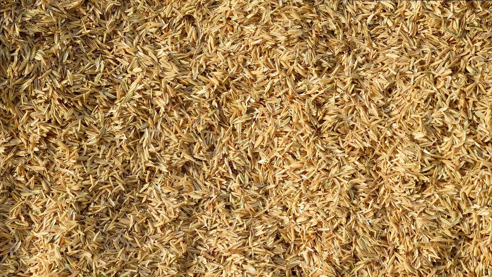
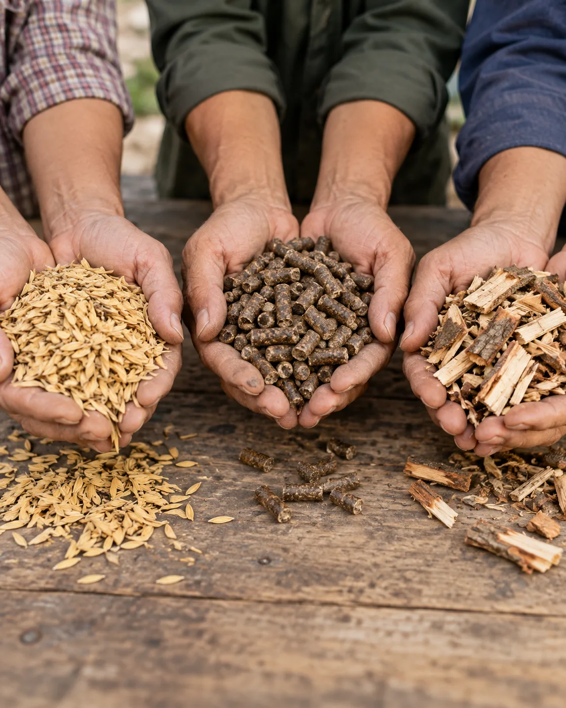

Thu mua nguyên liệu
Trấu rời, trấu viên, gỗ băm, củi băm và rơm rạ.
Chúng tôi kết nối nguồn trấu rời từ các nhà máy xay xát và đơn vị cung ứng. Cùng trao đổi sản lượng, chất lượng thực tế và điều kiện thu mua phù hợp với từng nguồn hàng.
Công ty TNHH Hoàng Nghi Biomass hoạt động trong lĩnh vực thu mua trấu rời, trấu viên, gỗ băm, củi băm và rơm rạ.
Hoạt động tại các tỉnh miền Tây, chúng tôi kết nối với nhà máy xay xát, cơ sở chế biến gỗ, đơn vị thu gom rơm rạ và các đối tác cung ứng nguyên liệu sinh khối trong khu vực.
Từ vỏ trấu và rơm rạ sau mùa gặt đến gỗ, củi từ các cơ sở chế biến, mỗi loại nguyên liệu mang đặc điểm riêng. Chúng tôi thu mua và kết nối các nguồn phụ phẩm này cho nhu cầu sử dụng sinh khối phù hợp.
+Xem thêm
Từ những hạt lúa sau xay xát, vỏ trấu trở thành nguồn nguyên liệu sinh khối quen thuộc của miền Tây. Trấu rời được thu gom trực tiếp từ các nhà máy xay xát, phù hợp với nhu cầu sử dụng nhiên liệu tại nhiều cơ sở sản xuất.
Chúng tôi thu mua trấu rời từ nhà máy và đơn vị cung ứng, với nguồn hàng thường xuyên hoặc theo mùa vụ. Mỗi nguồn trấu được trao đổi dựa trên tình trạng thực tế để lựa chọn phương án phù hợp.
Bạn có nguồn trấu cần bán? Hãy chia sẻ địa điểm, lượng hàng dự kiến và thời gian có hàng. Chúng tôi sẽ cùng bạn trao đổi việc thu mua, bốc xếp và giao nhận.
Chúng tôi kết nối nguồn trấu, rơm rạ, gỗ băm và củi băm từ bà con, cơ sở sản xuất và đơn vị cung ứng tại các tỉnh miền Tây.
Dù có nguồn hàng theo mùa vụ hay thường xuyên, bạn đều có thể trao đổi với chúng tôi để cùng tìm cách thu mua và giao nhận phù hợp.
Chúng tôi mong muốn xây dựng mối quan hệ hợp tác lâu dài, giúp nguồn nguyên liệu được tận dụng tốt hơn và việc mua bán thuận tiện hơn cho cả hai bên.
Trấu rời, trấu viên, gỗ băm, củi băm và rơm rạ.
Làm việc với nhà máy, cơ sở sản xuất và đơn vị thu gom trong khu vực.
Trao đổi chất lượng, khối lượng, giá và lịch giao nhận trước khi thu mua.
Gọi 0988 997 372 để trao đổi nguồn hàng và nhu cầu hợp tác.
Trấu từ xay xát lúa, gỗ và củi từ các hoạt động chế biến là những nguồn nguyên liệu quen thuộc trong lĩnh vực sinh khối.
Chúng tôi tập trung thu mua trấu rời, trấu viên, gỗ băm, củi băm và rơm rạ. Chúng tôi mong muốn trở thành điểm kết nối giữa các đơn vị có nguồn hàng và các đối tác trong ngành.
Từ những phụ phẩm quen thuộc sau mùa gặt và trong quá trình chế biến gỗ, chúng tôi nhìn thấy nguồn nguyên liệu còn nhiều giá trị sử dụng. Đó là lý do chúng tôi lựa chọn gắn bó với lĩnh vực sinh khối và các vùng nguyên liệu miền Tây.
Hoạt động tại các tỉnh miền Tây, chúng tôi chào đón các cuộc trao đổi về nguồn hàng và cơ hội hợp tác trong chuỗi nguyên liệu sinh khối.
+Trao đổi hợp tác
Trấu, rơm rạ, gỗ và củi là những nguyên liệu quen thuộc ở miền Tây. Chúng tôi muốn góp phần đưa các nguồn nguyên liệu này đến nơi có nhu cầu sử dụng phù hợp.
Chúng tôi mong được đồng hành lâu dài với bà con, cơ sở sản xuất và đơn vị cung ứng trong khu vực.
Cùng trao đổi nhu cầu, thống nhất cách làm và phối hợp trong từng chuyến hàng để việc mua bán thuận tiện hơn cho cả hai bên.